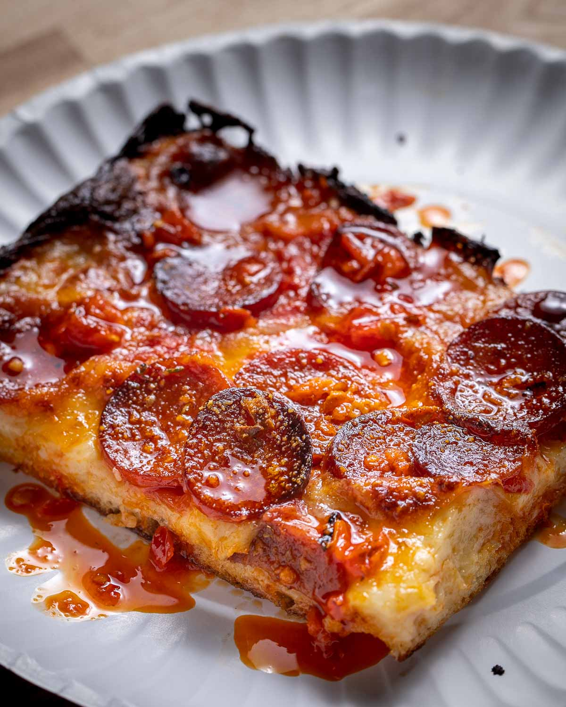
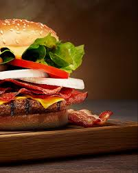

Pizza

Ingredients:
- 2 cups flour
- 1 packet yeast
- 1/2 cup water
- 1 cup tomato sause and 1 kg peperony
- 1 cup shredded cheese
Instructions:
- mix flour, yeast, and water to form dough
- let dough rise for 30 min
submitted by: Hayedeh Faizi
Lazania

Ingredients:
- Lazania noodles
- 500g ground beef
- 2 cups tomato sause
- 1 cup cheese
- 1 cup mozzarella cheese
Instructions:
- cook noodles and ground beef seperatly.
- layer noodles, meat, sause, and cheeses in a baking dish.
- bake at 180 C for 30 mins
submitted by:Zahra Tokhi
Burgur

Ingredients:
- grounf beef
- Burgur buns
- Lettuce, tomato, onion
- cheese slices
- ketchup, mustard, mayo
Instruction
- grin or pan fry the patties until fully cooked
- Toast the buns lightly
- Assemble with veggies, cheese, and condiments
submitted by:Diar Ariamehr